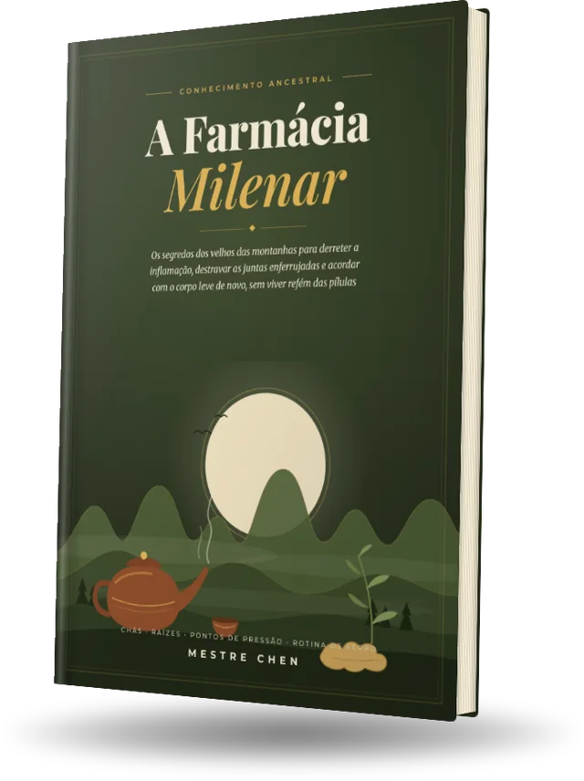
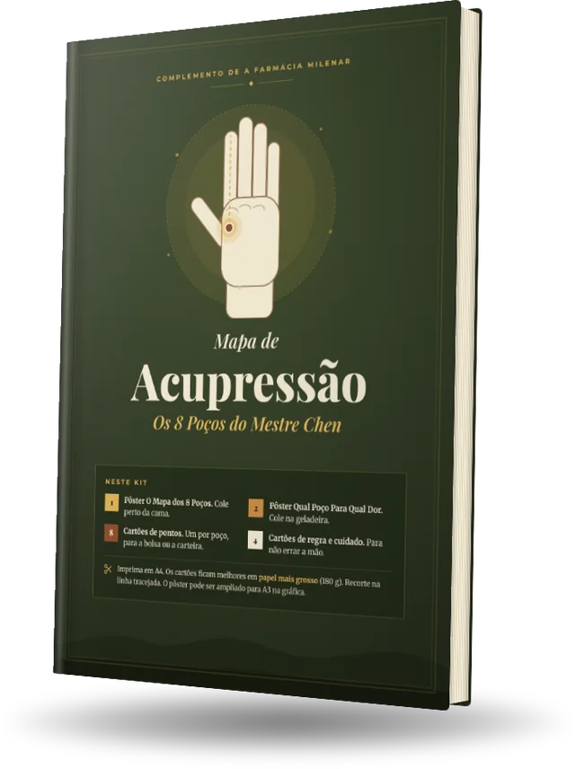
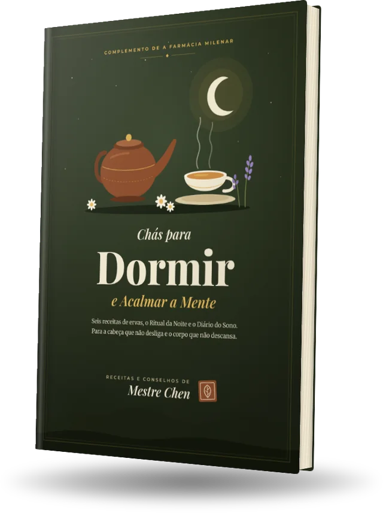
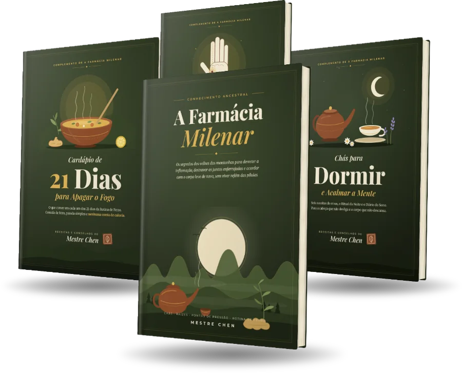

Primeiro uma perna, depois a outra, com a mão apoiada no colchão. Se essa é a sua manhã, leia esta carta até o fim. Ela foi escrita para você.

Ler a carta do MestreVocê. Sim, você que fechou a mão hoje cedo e sentiu os dedos duros como madeira velha. Sente-se um instante. O velho Chen tem uma coisa para te dizer.
Eu sei como começam os seus dias. O despertador toca e, antes de qualquer pensamento, o corpo reclama.
E ninguém vê. Para os outros, você está bem. Você sorri, trabalha, cuida de todo mundo. Mas por dentro, cada escada virou uma montanha.
À noite, deitado, vem a pergunta que você não diz em voz alta:
“Vou ficar assim para sempre?”
Eu ouço essa pergunta há setenta anos. E antes de te responder, preciso te perguntar uma coisa. Responda com a verdade, mesmo que doa.
Dez? Cem? Perdeu a conta?
Agora a pergunta que dói de verdade: a dor foi embora? Ou ela só dormiu algumas horas e voltou à noite, batendo na porta como cobrador que sabe o seu endereço?
Você sabe a resposta. Eu também sei.
A sua casa está pegando fogo. O detector de fumaça começa a apitar. E você, em vez de buscar água, arranca a bateria do detector.
O barulho para. A casa fica em silêncio. E continua queimando.
É isso que o analgésico faz. Ele amordaça o mensageiro. A dor é o seu corpo gritando que tem algo errado. A pílula não conserta o que está errado. Ela tapa a boca de quem avisou.
Um comprimido para a dor. Outro para o estômago que o primeiro queimou. Outro para conseguir dormir. Gavetas cheias de caixinhas, e o corpo cada ano mais duro.
Por isso escute a frase mais importante desta carta:
A culpa não é sua.
Você não enferrujou porque é fraco, preguiçoso ou velho demais. Você enferrujou porque te ensinaram a calar o alarme, e nunca a apagar o incêndio.
O velho Chen não é contra remédio. Antibiótico na hora certa salva vida. Remédio de pressão, de diabetes, do coração ou para afinar o sangue não se larga por conta própria. O meu problema é com a pílula usada como mordaça, como se fosse a resposta inteira.
Quando você corta o dedo, o lugar fica vermelho, quente e inchado. São os seus soldados correndo para consertar o estrago. Isso se chama inflamação, e na medida certa ela te protege. O fogo acende, conserta e apaga.
O problema começa quando o fogo não apaga mais. Quando, sem perceber, você joga lenha nele todos os dias:
Cada um é um graveto seco. Um só não faz nada. Mas você joga graveto há dez, vinte, trinta anos. E enquanto houver lenha, nenhum comprimido do mundo dá conta do fogo.
Esse calor que não para seca o óleo das suas juntas. E aí começa a ferrugem.
Cada articulação do seu corpo é uma dobradiça. Pense numa porteira de fazenda esquecida na chuva por anos. A dobradiça enferruja em quatro etapas. Toque na que mais parece com você hoje:
Seja qual for a sua etapa, repare numa coisa: a manhã é o pior momento. Você passou a noite parado, e a ferrugem endureceu enquanto você dormia. Por isso os primeiros passos doem tanto.
E é exatamente na manhã que o método do velho Chen começa.
Nasci numa aldeia sem farmácia, sem hospital e sem pressa. O que havia era a montanha, o fogão de barro e os velhos que tratavam o corpo como se cuida de uma lavoura: todo dia, com paciência, respeitando a estação.
Eu vi velhos de oitenta anos carregando lenha ladeira acima. Vi mulheres de noventa colhendo folha de chá com as mãos firmes.
Depois desci para a cidade e vi o contrário: gente de quarenta anos andando como se tivesse cem. Aquilo me encheu de raiva. E a raiva virou missão.
Onde dói?
Por que o fogo não apaga?
Um olha a fumaça. O outro olha a fogueira. E a sabedoria da montanha não tem pílula mágica. Tem três ferramentas simples, que qualquer pessoa usa em casa:
Chás, raízes e comida de feira que ajudam a esfriar o sangue em vez de jogar mais lenha.
Pontos de pressão no seu próprio corpo que ajudam a soltar o que está travado. Remédio que cabe na ponta dos dedos.
Movimento, sono e respiração na ordem certa, todo dia, para parar de alimentar o fogo.
Nenhuma delas sozinha faz milagre. As três juntas, todos os dias, transformam um corpo. E o mais curioso: hoje os próprios médicos reconhecem que comida, sono, estresse e movimento acendem ou apagam a inflamação. A montanha só sabia disso primeiro.
Eu passei a vida juntando o que os velhos me ensinaram. E coloquei tudo num livro.
O Método do Mestre Chen
63 páginas em linguagem de conversa, sem palavra difícil. Para ler no celular hoje à noite ou imprimir e deixar na cabeceira. São quatro caminhos:
O que todo mundo faz ao acordar? Pula da cama de uma vez, pisa no chão frio e exige do corpo travado o que exigiria de um corpo quente. É como dar partida num carro velho e já sair acelerando.
Os velhos da montanha nunca levantavam de um pulo. Eles acordavam o corpo antes de acordar as pernas. São só 10 minutos, ainda deitado. Sem tapete, sem roupa especial, sem força:
E isso é só o primeiro passo da Rotina de Ferro, um calendário de 21 dias feito para quem nunca conseguiu manter rotina nenhuma:
Não é mágica, e o velho Chen não vai te prometer milagre. Milagre é conversa de quem vende pílula. É conhecimento de gerações, e exige que você faça a sua parte todos os dias. Mas aprendi na montanha que o corpo sempre responde a quem cuida dele.
Quem desiste no meio quase sempre desiste por uma destas três razões: “não sei o que comer hoje”, “esqueci onde fica o ponto” ou “dormi mal e acordei pior”. Por isso o velho Chen preparou três companheiros para o livro:
O que comer em cada dia da Rotina de Ferro, com lista de feira pronta. Comida simples, sem contar caloria.

Dois pôsteres e doze cartões para imprimir, com os 8 pontos desenhados e o jeito certo de apertar. Para levar na bolsa.

6 receitas para a noite, o Ritual do Sono e o diário de 14 noites. Porque é dormindo que o corpo conserta.
Pagamento único. Você recebe o acesso no e-mail logo após a confirmação, lê no celular e pode imprimir.

Leia o livro. Faça os 10 minutos da manhã. Prepare o primeiro chá. Se em até 7 dias você sentir que não é para você, peça o reembolso e receba 100% do seu dinheiro de volta. Sem pergunta e sem cara feia.
Logo após a confirmação do pagamento, você recebe no e-mail o acesso à área de membros. Os livros estão em PDF: dá para ler no celular, no computador ou imprimir.
Sim. No Pix, a liberação costuma ser imediata. No cartão, assim que a operadora aprova.
Vai. O livro foi escrito em linguagem de conversa, letra grande, sem palavra difícil. Se preferir, peça para um filho ou neto imprimir. O Mapa de Acupressão já vem pronto para isso.
Não. O livro é educativo e não é consulta nem diagnóstico. Não pare nenhum remédio receitado por conta própria. Leve o livro até o seu médico: ele traz uma página só com quem não pode tomar cada chá e os sinais que pedem atendimento.
Cada corpo tem o seu tempo, e o velho Chen não vai te prometer prazo. O que o livro te dá é um caminho de 21 dias, com calendário, para criar a rotina. Quem faz a rotina é você.
O livro traz o método inteiro. O Kit traz o livro e mais três materiais que ajudam a manter a rotina: o cardápio de cada dia, o mapa dos pontos para imprimir e os chás para dormir. Separados, custam R$ 81,70. No Kit, R$ 67.
Você tem 7 dias de garantia. Peça o reembolso dentro desse prazo e recebe 100% do valor de volta.
Isso é certo. O despertador vai tocar e o corpo vai falar antes de você. A única pergunta é o que você vai fazer com isso.
O velho Chen foi duro com você nesta carta. Fui duro porque ninguém nunca foi. Todo mundo te ofereceu a saída fácil, o “toma isso que passa”, e você viu onde isso te trouxe.
O seu corpo ainda quer se mover. Ainda lembra como era subir uma escada sem pensar nela. Vamos devolver isso a ele. Um dia de cada vez.
Mestre Chen